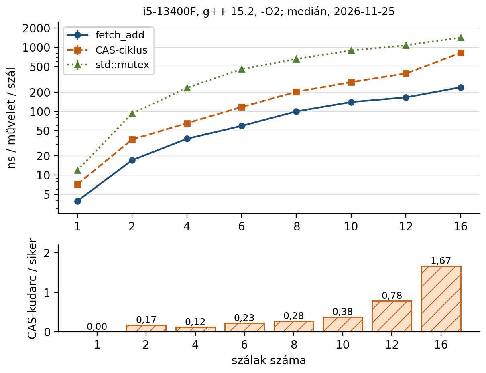

Két szál egy közös számlálót növel, mindkettő 8 388 608-szor (egy
bemelegítő és hét mért futásban, futásonként 1 048 576-szor). Ha a
növelés három külön lépés – betöltés, hozzáadás, tárolás –, a mérőgépen
a várt 16 777 216 helyett csak 8 500 630 marad: majdnem
minden második növelés elveszett, pedig a cache-ek végig koherensek
voltak. Ugyanezt fetch_add utasítással végezve a végösszeg
pontos, csakhogy egy művelet 0,25 ns helyett 17 ns-ig tart.
A koherencia ugyanis egyetlen olvasást vagy írást tesz egységessé (A koherencia problémája és az MSI-protokoll), az „olvasd ki, módosítsd, írd vissza” hármast nem. Ez az alfejezet azt mutatja meg, hogyan teszi a hardver oszthatatlanná ezt a hármast, mit kínál erre a három ISA, és mennyibe kerül.
Két alapvetően különböző stratégia létezik.
lock előtagú utasításai és az atomi memóriaműveletek (AMO)
így működnek.lr/sc és az ARM exkluzív
betöltés–tárolás párja.Az animáció a második utat mutatja két magon: mindkettő betölti a számlálót és foglalást jegyez be (2. lépés). P0 feltételes tárolása sikerül, és a sor átkerül hozzá – P1 foglalása ezzel megszűnik (5. lépés). P1 tárolása ezért elbukik (6. lépés), ő újrakezdi, és a második körben sikerrel jár (9. lépés). Figyeld meg, hogy a végén a számláló 2: nem veszett el növelés.
Definíció. Egy olvasás–módosítás–írás (read–modify–write, RMW) művelet atomi, ha a memória sorrendjében az olvasása és az írása között nincs más mag írása ugyanarra a címre.
A koherenciaprotokoll ehhez szinte mindent készen ad. A mag:
BusRdX-szel (vagy directorynál GetM-mel) M
állapotba hozza a sort – az SWMR miatt ekkor senki más nem olvashatja és
nem írhatja;Ezt hívják cache-zárnak (cache locking): nem a buszt
zárja, csak egyetlen sort, rövid időre. Az x86 lock előtagú
utasításai a szokásos, gyorsítótárazható memórián így viselkednek; ha
viszont az operandus átnyúlik két cache-soron (split
lock) vagy nem gyorsítótárazható, a processzor egy sokkal drágább, az
egész rendszert érintő buszzárat alkalmaz [S-INTEL-SDM] (a mértéke
gépfüggő). Ezért az atomi változókat mindig a természetes méretükre kell
igazítani, amit a std::atomic alapesetben megtesz.
lock
utasításokAz atomi memóriaművelet (atomic memory operation,
AMO) egyetlen utasítás: a régi értéket adja vissza, és helyére a művelet
eredményét írja. RISC-V-n az A-kiterjesztés amoadd.w,
amoswap.w, amoor.w, amomax.w stb.
utasításai ilyenek [S-RISCV-ISA]; AArch64-en az LSE-kiterjesztés
ldadd, swp, cas utasításai
[S-ARM-DOC]; x86-on a lock előtagú aritmetika, a
lock xadd és a xchg.
| C++ művelet | x86-64 (g++ 15.2, -O2) |
RISC-V (A-kiterjesztés) |
|---|---|---|
c.fetch_add(1), eredmény eldobva |
lock add QWORD PTR [rdi], 1 |
amoadd.d x0 célregiszterrel |
x = c.fetch_add(1) |
lock xadd |
amoadd.d |
c.exchange(v) |
xchg (zárolás előtag nélkül is atomi) |
amoswap.d |
c.compare_exchange_strong(e, d) |
lock cmpxchg |
lr.d/sc.d ciklus |
Az x86 oszlop a saját gépünk fordítójának kimenete; a RISC-V oszlop a
specifikáció utasításai, fordítóval nem ellenőriztük (az alapfeltétel
A-kiterjesztés). A rendezési jelzők (.aq, .rl)
a A hardver és a C++ memóriamodell témája. A
táblázatból két dolog látszik: x86-on a relaxált és a legerősebb
fetch_add ugyanaz az utasítás, és a „nem számít az
eredmény” változat rövidebb kódot ad.
Egyes rendszerek távoli atomit (far atomic) is tudnak: a műveletet nem a mag, hanem a közös cache vagy a memória végzi el, a sor nem vándorol. Sok mag által írt, ritkán olvasott számlálónál ez előnyös (ellenőrizendő: a támogatás processzorfüggő).
Definíció. A compare-and-swap (CAS)
atomi utasítás: CAS(cím, várt, új) összehasonlítja a
memória értékét a várttal; egyezéskor beírja az újat; mindkét esetben
visszaadja a régit (vagy a sikert).
CAS-szal tetszőleges egyszavas RMW megírható: beolvasom a régit, kiszámítom az újat, és csak akkor írom be, ha közben senki sem változtatta meg.
void mul3(std::atomic<std::uint64_t>& c) {
std::uint64_t seen = c.load(std::memory_order_relaxed);
while (!c.compare_exchange_weak(seen, seen * 3, std::memory_order_relaxed)) {}
}Siker esetén a ciklus kilép; kudarc esetén a
compare_exchange_weak a seen-be írja az
aktuális értéket, a következő kör azzal számol újra. A g++ 15.2
x86-kimenete (-O2, a címkék átnevezve):
mov rax, QWORD PTR [rdi] # seen = c
retry: lea rdx, [rax+rax*2] # új = seen * 3
lock cmpxchg QWORD PTR [rdi], rdx # ha c == rax: c = rdx
jne retry # kudarc: rax = aktuális érték
retA lock cmpxchg a koherencia szempontjából
írás: sikertelenül is kizárólagos birtoklást kér. A
sikertelen CAS tehát ugyanúgy elveszi a sort a többiektől.
Gyenge és erős változat. A
compare_exchange_weak hibásan is jelezhet kudarcot
(spurious failure), cserébe LR/SC-t használó gépen egyetlen próbálkozás;
a compare_exchange_strong ezt belső ciklussal elrejti. Ha
úgyis ciklusban hívod, a gyenge változat a természetes választás; x86-on
mindkettő lock cmpxchg-re fordul.
A CAS csak azt látja, hogy az érték ugyanaz-e, nem
azt, hogy történt-e valami. Vegyünk egy láncolt vermet
(a fej az A csomópontra mutat, utána B,
C). A kivétel: beolvasom a fejet (A),
beolvasom a következőt (B), majd
CAS(fej, A, B).
| lépés | ki | művelet | verem (fej elöl) |
|---|---|---|---|
| 1 | P0 | beolvassa: fej = A, A következője = B | A B C |
| 2 | P1 | kiveszi A-t | B C |
| 3 | P1 | kiveszi B-t (B felszabadul) | C |
| 4 | P1 | visszateszi A-t | A C |
| 5 | P0 | CAS(fej, A, B) sikerül |
B … (hibás!) |
A fej a P0 szerint változatlan (A), ezért a CAS sikerül,
és a felszabadított B-t teszi meg fejnek. Ez az
ABA-probléma: az érték A-ból B-be, majd vissza A-ba
változott. Ellenszerek: címkézett mutató (a mutató
mellett egy verziószám, amelyet minden módosítás növel, és a CAS a
kettőt együtt cseréli – x86-on például 128 bites
cmpxchg16b), vagy a csomópontok késleltetett felszabadítása
(hazard pointer, korszakalapú felszabadítás; a Haladó C++ könyv
témája).
Definíció. A RISC-V lr.w rd, (rs1)
(load-reserved) betölti a szót és foglalást
(reservation) jegyez be a címet tartalmazó memóriaterületre; az
sc.w rd, rs2, (rs1) (store-conditional) csak akkor ír, ha a
foglalás még él. Az rd 0, ha az írás megtörtént, különben
nem nulla [S-RISCV-ISA].
retry: lr.w t0, (a0) # t0 = számláló, foglalás
addi t0, t0, 1
sc.w t1, t0, (a0) # ír, ha a foglalás él; t1 = 0: siker
bnez t1, retry(A könyv archkit.riscv értelmezője az A-kiterjesztést
nem futtatja; ezt a ciklust a koherenciamodell lrsc_run
függvénye játssza le.)
A szabályok lényege:
lr és az sc között másik mag
ír a lefoglalt területre, az sc-nek el kell
buknia;sc más okból is elbukhat (megszakítás, a sor
kiszorítása); ez a hamis kudarc (spurious
failure);AArch64-en ugyanez a minta ldxr/stxr
(rendezett változatban ldaxr/stlxr)
[S-ARM-DOC]. Az LR/SC a fenti ABA-t elvben elkerüli, mert
bármely írás törli a foglalást – de a verem esetén a
„következő” mező betöltése kellene a lr és az
sc közé, ami már nem korlátozott ciklus.
Minden atomi RMW – a sikertelen CAS és a test-and-set is – a sort M állapotban kéri. Ha mag verseng egy címért, a műveletek sorosan hajtódnak végre, és gyakorlatilag mindegyik előtt a sornak át kell vándorolnia.
Továbbvitt eredmény. Az RMW koherenciaköltsége: a sor kizárólagos birtoklása, tehát versengés alatt sorátvitel; a sikertelen CAS is ezt fizeti, a sima olvasás viszont megosztva marad. Ezért pörög egy jó zár olvasással (Zárak és tranzakciós memória), és ezért számít, hogy a verseng magok milyen messze vannak egymástól (Összeköttetések és NUMA).

A jegyzőkönyv:
code/bench/bench_counter.cpp --mode atomics, i5-13400F, g++
15.2.0, -O2, 7 ismétlés, rögzített szálak (P-magok,
E-magok, végül SMT-párok), 2026-11-25. A figyelemre méltó pontok: a
relaxált és a seq_cst fetch_add x86-on
gyakorlatilag azonos (2 szálon 17,1 és 17,0 ns), ahogy az azonos
utasításból várható; a CAS-ciklus 2–6 szálon nagyjából kétszer annyiba
kerül, mint a fetch_add, 16 szálon már több mint háromszor
annyiba; a std::mutex a legdrágább, mert zárolás és
feloldás is atomi, versengéskor pedig a rendszermag is belép (Zárak és tranzakciós memória).
1. Az LR/SC ütemterv. Két mag, közös számláló (0), MESI. Ütemterv: 0, 1, 0, 1, 0, 1, 1, 1, 1 (melyik mag lép).
| # | mag | utasítás | busz | P0 | P1 | foglalás P0, P1 | számláló |
|---|---|---|---|---|---|---|---|
| 1 | P0 | lr → t0 = 0 |
BusRd |
E | I | igen, – | 0 |
| 2 | P1 | lr → t0 = 0 |
BusRd |
S | S | igen, igen | 0 |
| 3 | P0 | addi → 1 |
– | S | S | igen, igen | 0 |
| 4 | P1 | addi → 1 |
– | S | S | igen, igen | 0 |
| 5 | P0 | sc siker |
BusUpgr |
M | I | –, – | 1 |
| 6 | P1 | sc kudarc |
– | M | I | –, – | 1 |
| 7 | P1 | lr → 1 |
BusRd (+Flush) |
S | S | –, igen | 1 |
| 8 | P1 | addi → 2 |
– | S | S | –, igen | 1 |
| 9 | P1 | sc siker |
BusUpgr |
I | M | –, – | 2 |
Az 5. lépés BusUpgr-je érvényteleníti P1 sorát, ezzel P1
foglalása megszűnik, a 6. lépésben az sc buszforgalom
nélkül elbukik.
2. Miért drágább a CAS-ciklus? A mérés szerint 2
szálon sikerenként 0,17 kudarc, azaz 1,17 próbálkozás jut, egy sikeres
növelés 36,2 ns. Egy próbálkozás tehát
ns, szemben a fetch_add 17,1 ns-ával: a CAS-ciklus
próbálkozásonként is drágább, mert a külön betöltés és a
cmpxchg között a sor elvándorolhat. 16 szálon 2,67
próbálkozás kell egy sikerhez
(
ns próbálkozásonként, a fetch_add 237,5 ns-ához képest):
itt már a kudarcok száma a fő tényező.
A lrsc_run az ütemtervet MESI-modellen játssza le.
Először az ismert ütemtervet, utána ugyanazt a rövid ütemtervet három
elrendezéssel:
import sys; sys.path.insert(0, "code")
from archkit import coherence as C
for s in C.lrsc_run([0, 1, 0, 1, 0, 1, 1, 1, 1]):
res = "" if s.ok is None else ("siker" if s.ok else "kudarc")
print(f"{s.n} P{s.core} {s.instr:<4} {res:<6} "
f"állapot={''.join(s.states)} számláló={s.mem[0]}")
for stride, name in ((0, "közös szó"), (4, "egy sor, két szó"), (64, "külön sor")):
runs = C.lrsc_run([0, 1, 0, 1, 0, 1], stride=stride)
print(f"{name:<17} sc-eredmények: {[s.ok for s in runs if s.instr == 'sc']}")1 P0 lr állapot=EI számláló=0
2 P1 lr állapot=SS számláló=0
3 P0 addi állapot=SS számláló=0
4 P1 addi állapot=SS számláló=0
5 P0 sc siker állapot=MI számláló=1
6 P1 sc kudarc állapot=MI számláló=1
7 P1 lr állapot=SS számláló=1
8 P1 addi állapot=SS számláló=1
9 P1 sc siker állapot=IM számláló=2
közös szó sc-eredmények: [True, False]
egy sor, két szó sc-eredmények: [True, False]
külön sor sc-eredmények: [True, True]Az „egy sor, két szó” eset hamis SC-kudarc: a két mag különböző számlálót növel, mégis elveszi egymás foglalását, mert a foglalás a modellben egész sorra szól.
Az ABA-t a Snoop.cas művelettel játsszuk le; a
csomópontok következő-mutatói külön sorokban vannak, a 0 az üres
mutató.
def aba(tagged):
s = C.Snoop(2, "MESI")
A, B, D = 1, 2, 3
nxt = {A: 64, B: 128, D: 192}
for node, after in ((A, B), (B, D), (D, 0)):
s.write(0, nxt[node], after)
pack = lambda ptr, ver: 16 * ver + ptr if tagged else ptr
s.write(0, 0, pack(A, 0)) # fej = A
seen = s.read(0, 0) # P0 elolvassa a fejet ...
after = s.read(0, nxt[seen % 16]) # ... és a következőt
s.cas(1, 0, pack(A, 0), pack(B, 1)) # P1 kiveszi A-t
s.cas(1, 0, pack(B, 1), pack(D, 2)) # P1 kiveszi B-t
s.write(1, nxt[A], D) # P1 visszateszi A-t
s.cas(1, 0, pack(D, 2), pack(A, 3))
ok, _ = s.cas(0, 0, seen, pack(after, 1)) # P0 CAS-a
return ok, s.read(0, 0) % 16
for tagged in (False, True):
ok, head = aba(tagged)
print(f"címke: {'igen' if tagged else 'nem':<4} P0 CAS sikeres: {ok} fej: {'?ABD'[head]}")címke: nem P0 CAS sikeres: True fej: B
címke: igen P0 CAS sikeres: False fej: ACímke nélkül a CAS sikerül, és a már kivett B lesz a
fej. A 4 bites mutató mellé tett verziószám a 0 → 3 változást
észreveszi, a CAS elbukik, és P0 újrakezdi a ciklust.
Az interaktív ábrán a P0 lép és P1 lép gombokkal te vagy az ütemező; az Ütemterv mező is szerkeszthető.
sc-je bukik
el. (Egy lehetőség: 010110.)010101. P1 sc-je elbukik, noha nincs
közös adat. A külön sorok elrendezéssel ugyanez az
ütemterv mindkét magnál sikeres.001110001110001110. P0 háromszor egymás után elbukik. Miért
nem tarthat ez a végtelenségig? (Mert minden kudarcához P1 egy sikere
kellett, és P1-nek csak három növelése van.)compare_exchange kudarc
után frissíti a várt értéket; az újat minden körben ebből számold.lr és az
sc közé betöltés, függvényhívás vagy hosszú kód került.
Javítás: csak korlátozott ciklust írj; bonyolultabb
frissítéshez CAS-t vagy zárat.fetch_add-tól
gyorsulást vár x86-on. Ok: x86-on mindkét rendezés
ugyanazt a lock utasítást adja. Javítás: a
versengést csökkentsd (szálankénti részszámláló), ne a rendezést.c = c + 1 utasítást?lock add alatt?compare_exchange_weak egyező
érték mellett is?sc-eredményeit két magon, közös számlálóval. Mi a számláló
végül?x = 5. Mit ad vissza és mit hagy
hátra a CAS(x, 4, 9) művelet, és milyen
koherenciaállapotban lesz a sor a hívó magnál x86-on?atomic_max függvényt (a
változó legyen legalább v) CAS-ciklussal úgy, hogy
felesleges írást ne végezzen. Mi történik a koherenciával, ha a
jelenlegi érték már nagyobb?fetch_add 59,1 ns. Mennyi egy
CAS-próbálkozás ideje, és mit mond ez?sc-kudarc arányát
esetén.Az atomi RMW garantálja, hogy az olvasás és az írás között nem
történik idegen írás. A hardver kétféleképpen éri el: a sort M
állapotban fogva tartja (x86 lock, RISC-V
és ARM AMO), vagy foglalást tesz rá, és a feltételes
tárolás elbukik, ha közben más írta (LR/SC); a bukás lehet hamis is,
ezért ciklus kell. A CAS tetszőleges egyszavas RMW-t
tesz lehetővé, de az ABA észrevételéhez verziószám vagy
biztonságos felszabadítás kell. Az RMW koherenciaköltsége a sor
kizárólagos birtoklása – a sikertelen CAS-é is –, ezért versengés alatt
az ár a magszámmal nő: a mérőgépen 16 szálon a fetch_add
238, a CAS-ciklus 815 ns.
sc-kudarcnál (foglalás
elvesztése más okból).sc olyankor is elbukik, amikor a lefoglalt adatot
nem írta senki (például a sor másik szavát írták).1. P0 lr, addi, P1
lr, addi, P0 sc siker
(érvényteleníti P1 foglalását), P1 sc kudarc. Számláló:
1.
runs = C.lrsc_run([0, 0, 1, 1, 0, 1])
print([(s.core, s.ok) for s in runs if s.instr == "sc"], "számláló:", runs[-1].mem[0])[(0, True), (1, False)] számláló: 12. Kudarc (a régi értéket, 5-öt adja),
x 5 marad. A lock cmpxchg írási jogot kér,
ezért a sor a hívónál M állapotba kerül, a többi másolat érvénytelen
lesz.
3.
void atomic_max(std::atomic<std::int64_t>& m, std::int64_t v) {
std::int64_t seen = m.load(std::memory_order_relaxed);
while (seen < v && !m.compare_exchange_weak(seen, v, std::memory_order_relaxed)) {}
}Ha seen >= v, nincs CAS, csak betöltés: a sor S
állapotban maradhat minden magnál, nincs sorátvitel. A g++ 15.2 kimenete
valóban a lock cmpxchg előtt ugrik ki
(cmp rsi, rax / jle). RISC-V-n ugyanezt
egyetlen amomax.d végezné, az azonban mindig ír.
4.
ns próbálkozásonként, szemben a fetch_add 59,1 ns-ával: egy
próbálkozás is drágább, a kudarcok csak ezen felül jönnek.
5.
import random
def lrsc_fail_rate(m, seed=63):
rng, sched = random.Random(seed), []
while len(sched) < 20000:
sched += [rng.randrange(4)] * rng.randint(1, m)
runs = C.lrsc_run(sched, ncores=4, increments=50)
sc = [s.ok for s in runs if s.instr == "sc"]
return sc.count(False) / len(sc), sum(runs[-1].done), runs[-1].mem[0]
for m in (1, 3, 12):
rate, done, counter = lrsc_fail_rate(m)
print(f"m={m:>2}: sc-kudarc {rate:5.1%}, sikeres {done}, számláló {counter}")m= 1: sc-kudarc 58.3%, sikeres 200, számláló 200
m= 3: sc-kudarc 46.7%, sikeres 200, számláló 200
m=12: sc-kudarc 18.7%, sikeres 200, számláló 200A számláló mindig egyezik a sikeres tárolások számával. Minél
hosszabb egy mag megszakítatlan futása
(),
annál gyakrabban fér bele egy teljes
lr–addi–sc hármas, és annál
ritkább a kudarc. A valódi hardver ugyanezért tartja meg rövid ideig a
sort egy lr után.
6. Ha a P0 olvasása és CAS-a között a verziószám pontosan többszörösével nő, és a mutató is ugyanaz, az ABA észrevétlen marad. Ez csak nagyon hosszú megszakításnál (például a szál ütemezéséből való kiesés) lehetséges; ellenszer a szélesebb (64 bites) verziószám a 128 bites CAS-sal, vagy a késleltetett felszabadítás.